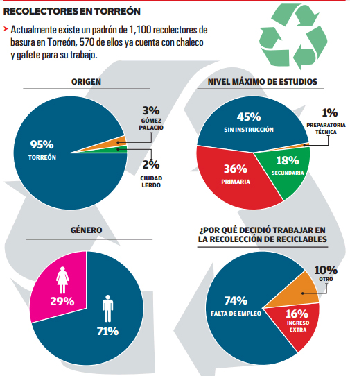

En Torreón se generan alrededor de 7.7 kilogramos diarios de basura por cada diez habitantes, lo que equivale a más de 190,918 toneladas de basura dispuestas en el relleno sanitario de la ciudad en el 2015, de acuerdo con datos del Instituto Municipal de Planeación y Competitividad de Torreón (IMPLAN). Ante el crecimiento de esta cifra, es urgente crear una mayor cultura de separación de residuos que se origine desde el hogar.
La Dirección General de Medio Ambiente de Torreón lleva a cabo diversos programas y campañas para crear conciencia sobre la importancia del reciclaje, ya que es una actividad que sirve como sustento a muchas personas y genera un beneficio económico.
Recientemente Medio Ambiente se incorporó al Programa Inclusivo de Reciclaje (PROINDER), una iniciativa promovida por el Banco Interamericano de Desarrollo (BID), que busca incorporar a los recolectores urbanos, a los mini-centros de acopio de materiales reciclables, a los hogares, escuelas y empresas de Torreón a un sistema inclusivo de reciclaje.
La finalidad es regular la actividad de los pepenadores, de los centros de acopio de reciclables y apoyar a las familias que dependen de esta actividad. Actualmente existe un padrón de 1,100 recolectores de basura en Torreón, a 570 de ellos ya se les otorgó un chaleco y gafete para que sean identificados en colonias y escuelas y se les facilite su trabajo.
En la opinión de Susana Esténs, directora de Medio Ambiente en el municipio, ya pasamos de la idea de que cada colonia en Torreón cuente con contenedores y depósitos especiales de basura, porque la separación de residuos se debe generar en cada hogar:
“Todo va encaminado a la separación de origen, al reconocimiento de los pepenadores, a la regularización de los centros de acopio y prolongar su tiempo de vida útil”.
“Decir que yo separo la basura y el camión la revuelve, es una excusa, debe ser muy visible para la mayoría de la población la gente que vive de reciclar materiales, porque diariamente a distintas horas del día vemos a gente en bicicleta, triciclo recolectando reciclables porque tienen un valor y es nuestra responsabilidad separarlo”, expresa la químico Susana Esténs.
“La conservación de los recursos naturales a través del reciclaje es una responsabilidad compartida en la que toman parte fabricantes, consumidores y autoridades. La Ley para la Prevención y Gestión Integral de los Residuos establece que los proyectos de reciclaje deberán ser técnica, económica y ambientalmente factibles. De ahí que es importante valorizar (comprar-vender) los reciclables y que forme una cadena de valor en lugar de enterrarlo todo a un alto costo económico, ambiental y social”, agrega.
La propuesta es que en cada hogar, centro de trabajo o escuela se generen dos bolsas de basura: una con desechos en general y otra que incluya materiales reciclables: latas, aluminio, periódico, revistas, plásticos duros o cacharros, botellas de refresco, etcétera. De esta manera el pepenador de basura no crea desorden en la calle y toma el material que necesita para generar sus ingresos.
Atención a pepenadores
Dentro del Programa Inclusivo de Reciclaje, cuya responsable en la ciudad es Catalina Argüelles, se cuenta con una socióloga que trabaja buscando y realizando encuestas a los pepenadores, con el fin de incluirlos en este programa que además los acerca a otros beneficios sociales por parte del municipio.
Se les ofrece una capacitación en temas como habilidades para la vida, educación financiera y separación de residuos, buscando mejorar su condición de vida y aumentar sus ingresos económicos.
De acuerdo con Catalina Argüelles la meta es llegar a registrar formalmente a 1,800 recolectores, a la fecha se tiene ya un padrón de 1,100. De ellos 71 por ciento son hombres y 29 por ciento son mujeres. 45 por ciento no cuenta con ninguna instrucción educativa, 36 por ciento tiene primaria y 18 por ciento secundaria.
De esta población 82 por ciento no pertenece a ningún programa de beneficio social, la mayoría lleva entre 6 meses y 3 años dedicándose a esta actividad y su ingreso aproximado por semana es de 400 a 600 pesos. 49 por ciento de los recolectores/as son los únicos que trabajan en el hogar y llegan a depender de ellos de 2 a 3 personas.
De aquí la importancia de regular su actividad. Los pepenadores viven principalmente en las periferias de la ciudad con características particulares de marginación: terrenos irregulares, carencia en servicios básicos, de salud, alimentación, acceso a la educación y de espacios lúdicos, lo que los ubica en un alto nivel de vulnerabilidad social.
Según el diagnóstico social de PROINDER, su bajo nivel de escolaridad limita el acceso a un empleo formal, por lo que consideran la recolección como única opción de subsistencia. En los últimos tres años se ha incrementado mayor presencia de mujeres, menores de edad y familias completas trabajando en la recolección de reciclables. Por ello es necesario que en cada colonia, escuela o centro de trabajo, uno de estos recolectores pueda trabajar separando la basura y obtener un ingreso, detalló la directora de Medio Ambiente.
“El programa del BID les da habilidades para la vida, desde cómo relacionarte con los vecinos, cómo llevar tus cuentas, acercarlos a programas del municipio, ayudarles en diversos temas. Es un proyecto noble que atiende a la población más vulnerable”, subrayó Catalina Argüelles.
Dispersión Urbana
